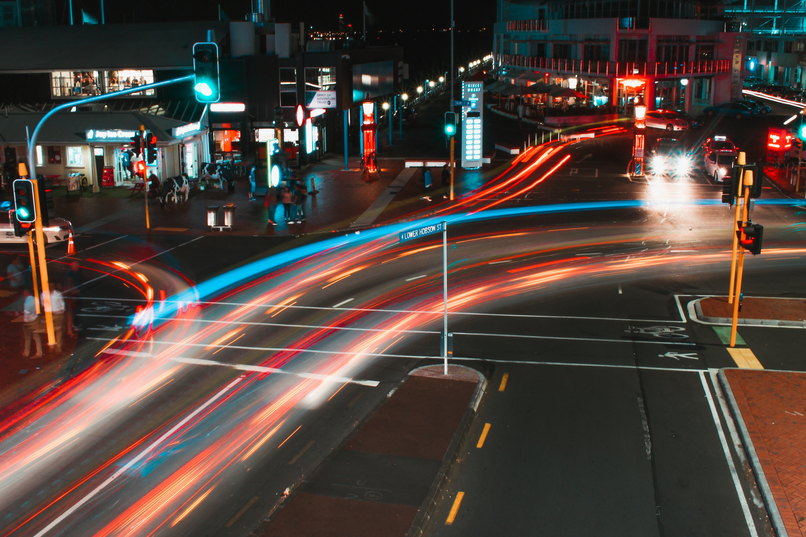
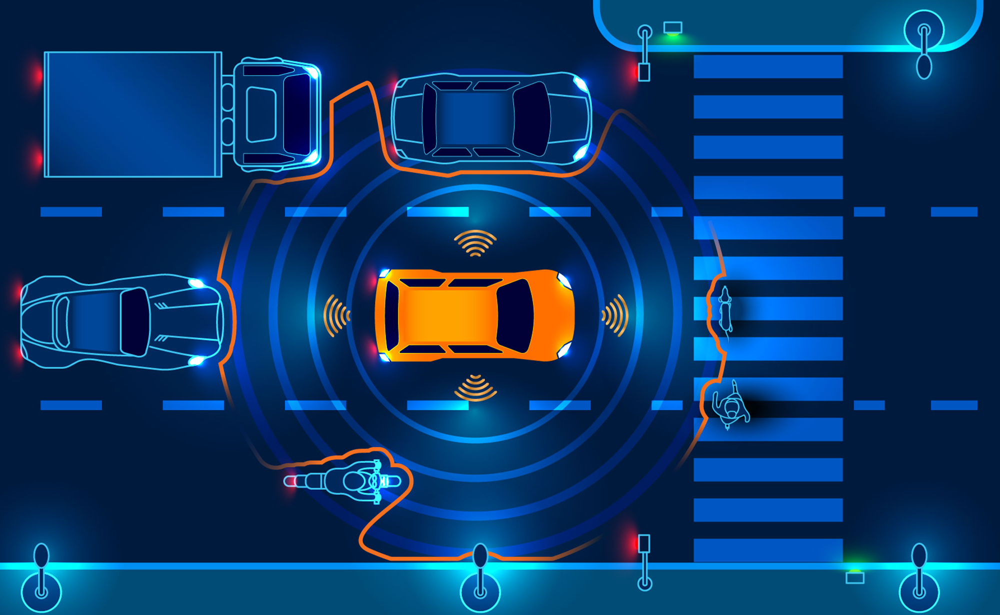
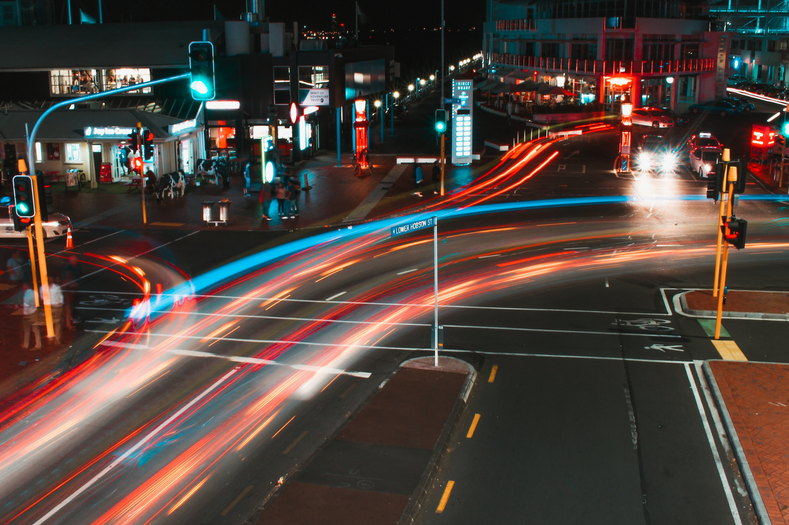
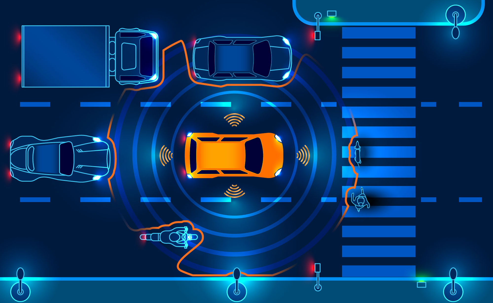

Bird-eye-view Perception
The next generation of the software algorithm framework in autonomous driving.

 



The next generation of the software algorithm framework in autonomous driving.
Representative work published at top-tiered venues.
[Sell a New Philosophy]
[Redefine the Community]
[Baseline][nuScenes First Place]
[Waymo Challenge 2022 Official First Place]
Copyright © 2023 - All Rights Reserved - OpenDriveLab